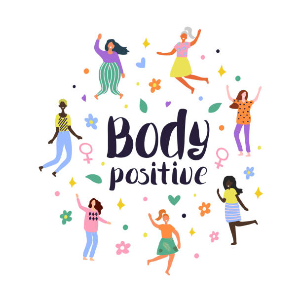
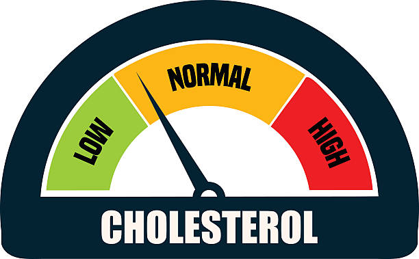
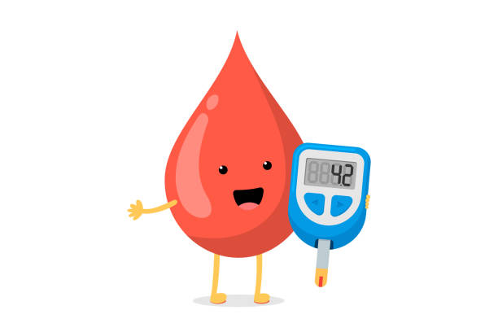

Real Stories from Real People ...
In a world filled with misleading advertisements and lies about quick and easy weight loss gimmicks,
I understand the value of having a healthy and sustainable eating routine that you can stick to.
Below you can find real stories from my clients in their journey to attaining a healthy lifestyle.
"My lifestyle changed! "
My name is suhas, I'm from Bangalore. When I first started my journey of my weight loss,I was not confident whether I would lose weight or not.I weighed 140kgs.I had been trying from many years to lose weight but ,every mornings I would go on a diet and in the evening end up breaking it. Later when I had lost all hopes , I thought of giving it one last try. When I first started my weight loss journey ,my first target was to lose 2kgs n a week, and a week late when I weighed myself I had lost 4kgs in a very miraculous way. At that moment my confidence boosted up to the sky. From then on I never looked back on that part of my life. From that day on I have continueously losing my weight in a very healthy way without any anabolic or catabolic steroids or supplements. And ,I have successfully lost 30kgs of weight. I am very thankful to Mrs.Usha Harish for her weight loss diet programs . Now I am very much confident that I can maintain my physique with the right diet and proper workout.
- Suhas

"The weight loss also brought the positive side of myself!"
I would like to thank you for helping me reduce my weight.
My life style being unplanned,
irregular eating habits, post pregnancy, all together lead to overweight.
I strictly followed your diet plan of eating lots of fiber in the form of vegetables and fruits.
From you, I have realized that one cannot lose weight overnight and requires a lot of patience,
discipline and dedication.
With continuous encouragement and the support from my husband helped me through the journey of losing weight.
The weight loss also brought the positive side of myself.
- Shilpa
" I lost weight and also feel very healthy..."
You and my friends Veena and Chandrika were a source of inspiration for the weight loss program. You Particularly made the impossible
possible. I had accepted my obesity as something which i have to live with but everything changed after consulting you. Seeing my friend Veena losing weight i was inspired by her to consult you.
Little hesitant at first but somehow making up my mind i came to you hoping of losing some weight. But speaking to you for the first time gave me some hope that i climbed up the first step of losing weight. After the counselling session with you i felt relaxed and got the confidence that i can do it.
I strictly followed your diet plan of eating lots of fiber in the form of vegetables and fruits. The myth that diet means starving was proved wrong. Every two hours i was eating as per your instructions. The diet involved almost everything fruits, vegetables,rice, rotis , dosas soup, milk, curd etc. This is when i realized that it is not eating but EATING RIGHT along with a hour's workout is the secret behind a healthy weight loss. The result: In the first week i lost 2kg that really motivated me . As i continued my diet my weight loss became visible and everyone around noticed it and that was an additional motivation. I continued the session and within a span of five and half months i lost about 21 kgs and I realized that nothing is impossible if you are determined to achieve it.
The most important thing is you meet the right person to help you like i had a mentor Mrs. USHA HARISH and follow their instructions. You must change your life style particularly in what we eat that is EAT RIGHT. I did it and i have not only lost weight but now i can walk a long distance without feeling tired, my legs don't swell up like how it used and most important i had a severe thyroid problem and now my thyroid parameters are normal. My sincere thanks to Mrs. Usha Harish who helped me in achieving this.
- Jayanthi Pandit
"Carefully Curated diet plans"
I am Vaishnavi. I joined the course for 3 months and successfully lost 6 kgs. I feel the carefully curated diet plans each week according to my work schedule and health conditions really helped me lose weight. Not only this, I also feel healthier and can definitely judge an increase in my stamina. I am grateful to Dr.Usha Harish for guiding me through the process. The advices I received will stay with me for a long time to go.
- Vaishnavi

"My Lipids & Sugar level has come down !"
My name is k.v.vishwanath prasad, aged 58yrs height 5.ft 11 inches wt 86 kgs, i used to
come to Raga skin clinic with wife monthly once when i am waiting in the loby for our turn,
i used see this board reduce 10 to 12 kgs within 3 months, as i was trying to reduce
12 kgs overweight but i was not able to reduce atleast 2 or 3 kgs i have colestral,and my sugar was in border line, in spite of playing badminton for 3 days walking for 3 days so i took one consultation i was immpressed by the way mrs usha was giving the consultation
then took the package for 3 months , and was fallowing her instructions and now i have
reduced about 10 kgs, my lipids has come down, and sugar level has come down,
i feeling very light, but now i have maintain this, this result i have gained without any
crash diet with only permutation and combination with the food i was having.
thankyou very much usha.
- K.V.Vishwanath Prasad

"My experience was wonderful.
It helped me manage my diabetes!"
I took the 3 months healthy deit course and I found it is very helpful.
My experience was wonderful. Also it helped me to manage my diabities.
I started with my HbA1c 7.4 and when I completed the course it came down to 5.7.
If we follow what Dr.Usha advises then I am sure we can achieve what we want.
Doctor explains in detail and weekly consultation will be for status review of the previous week.
At the end of the course she also explains and make us understand how we have to maintain this going foward.
This way it will help us to maintain and I feel it is kind of clear knowledge transfer.
I really thank Dr.Usha Harish for helping me learn about healthy lifestyle.
- Dinesh Hegde [Verified Patient (@Practo)]
"Postpartum Weight Loss: She made sure that I was eating enough and covered all nutrients required for both me and my baby!"
Postpartum weight loss:
I had consusted Dr.Usha once before as well and had lost 12 kg in 3 months.
This time 3 months postpartum I was stuck at same weight even though I was eating right and exercising.
Probably becauseof the harmonal changes. So, I decided to consult again and I am glad to say I have lost 11kg.
The diet and exercise helped me gain strength and it did not affect my baby in the least.
She made sure that I was eating enough and covered all the nutrients required for both me and baby.
I was reducing weight and my baby was gaining as expected. I do highly recommend her
- [Verified Patient (@Practo)]